Materiales
- 1 vaso precipitado de 500mL (en caso de no haber 2 vasos precipitados de 200mL o 250mL)
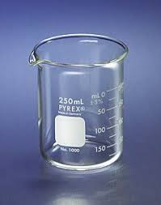
- 1 vaso precipitado de 100mL (en caso de no haber 1 vaso precipitado de 200 o 250mL)
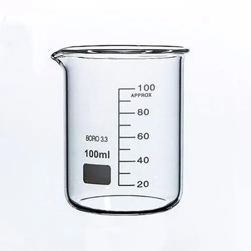
- 2 Pipetas aforadas de 20mL (en caso de no hacer, pipetas graduadas de 10mL o 20mL)
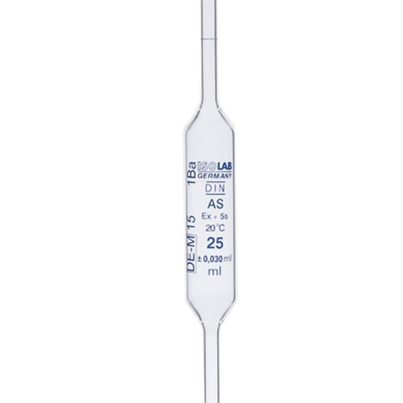
- Propipeta
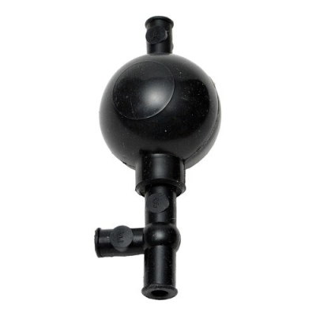
- Varilla de vidrio
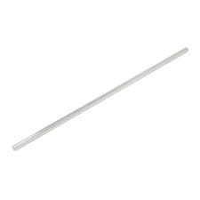
- Peachímetro
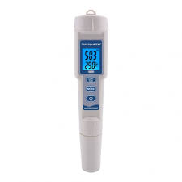
- Embudo
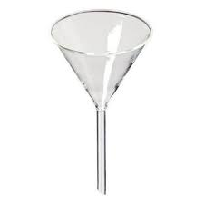
- Envase de plastico con atomizador o dosificador de 25omL para envasar
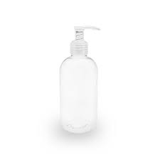
Reactivos
- Alxohol etílico (etanol) al 70%-250mL, en caso de no tener, utilizar alcohol etílico de 96% o 96°
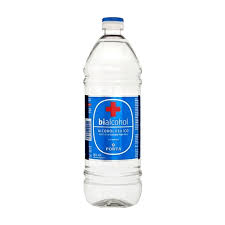
- Agua destilada
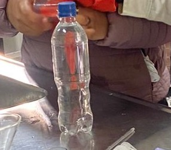
- Glicerina
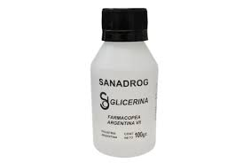
- Goma xantama
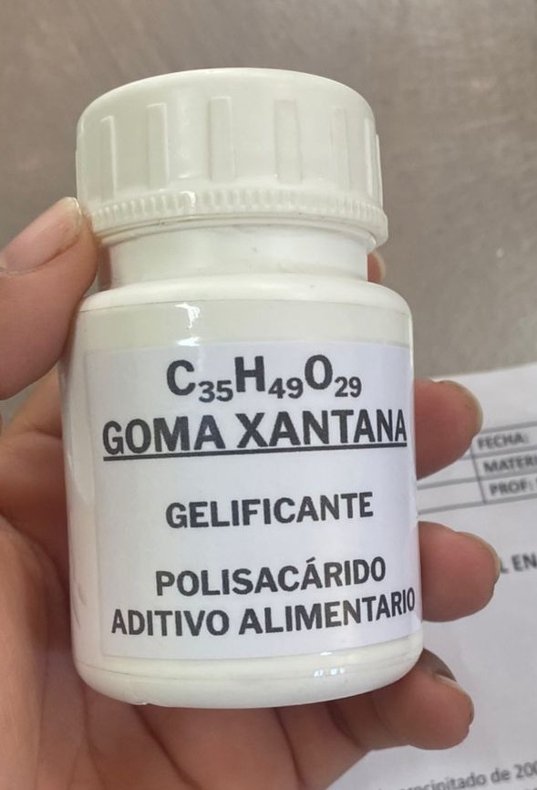